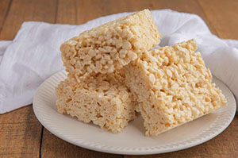

Best Rice Krispie Treats

ingredients
1/2 cup (100grams)butter
1 package of large marshmallows
5 cups (about 500 grams)crispy rice cereal
Directions
- Melt the butter in a large sauce pan.
- Add the marshmallows and stir them until they've melted.
- Remove the sauce pan from the heat.
- Continue to stir for a few more minutes.
- Add the crispy rice cereal and stir until it's coated with melted marshmallows.
- Spread the rice crispy treats evenly in a pan and let them cool.
- Cut the treats into squares.